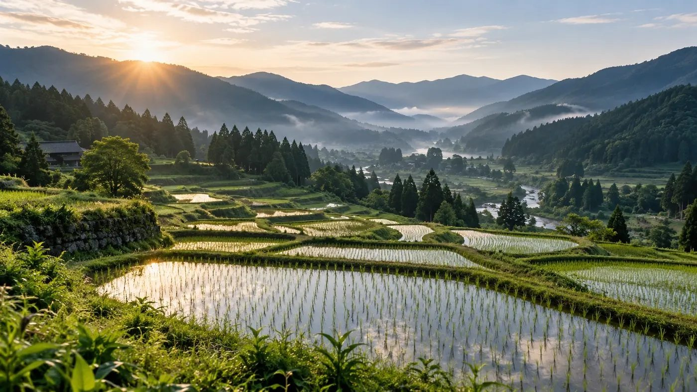
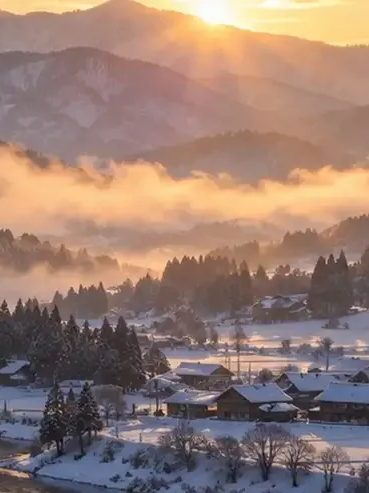
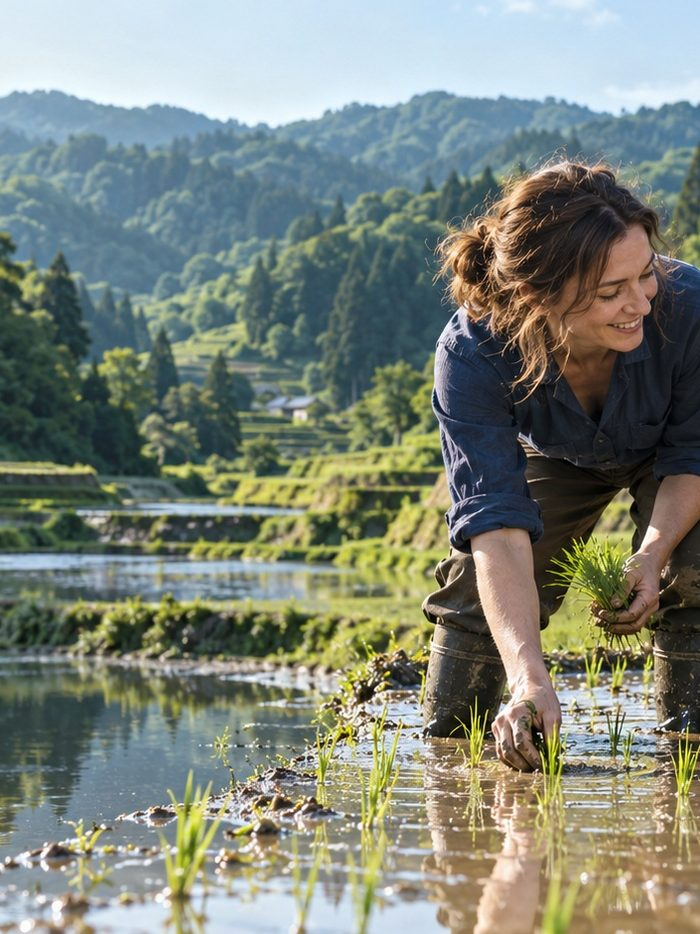
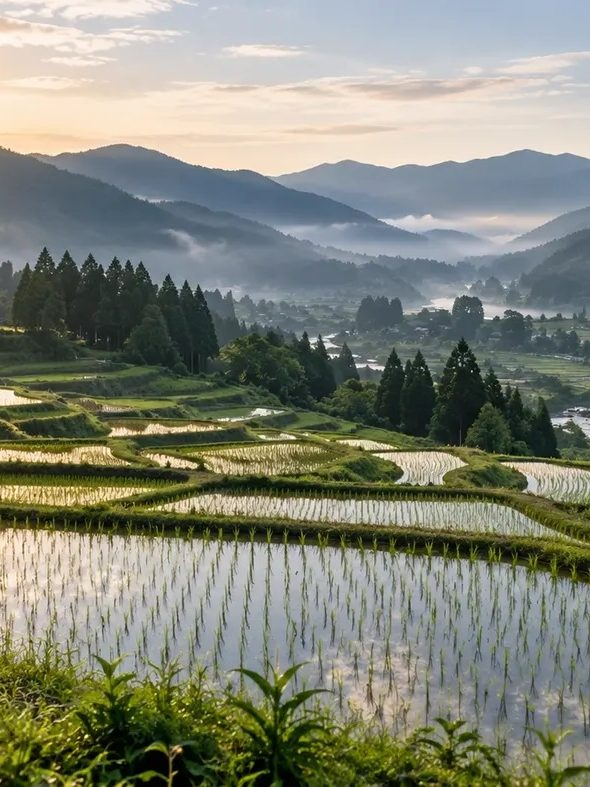
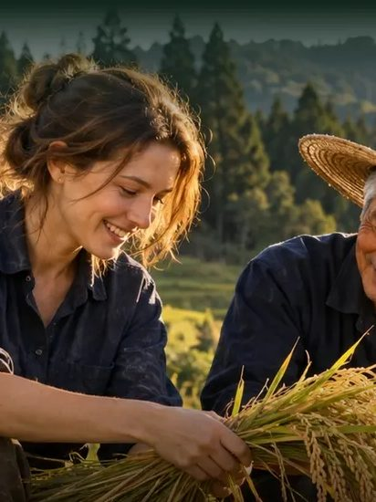
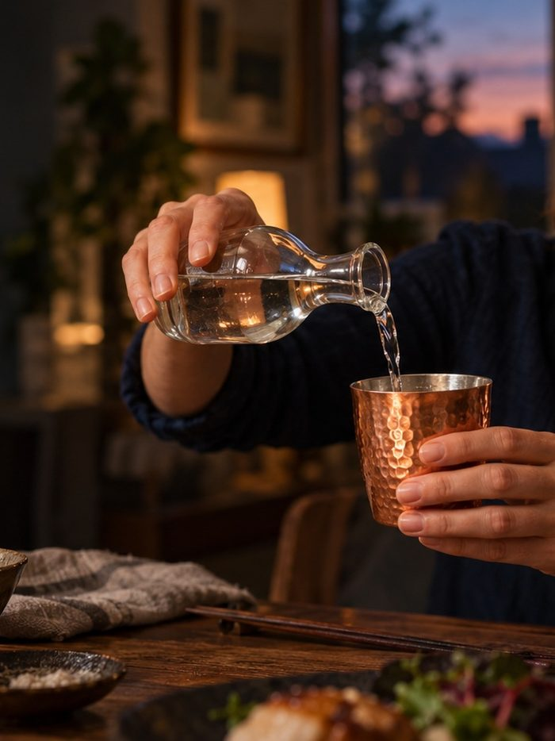
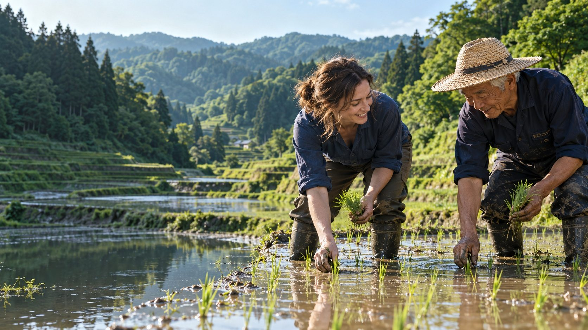
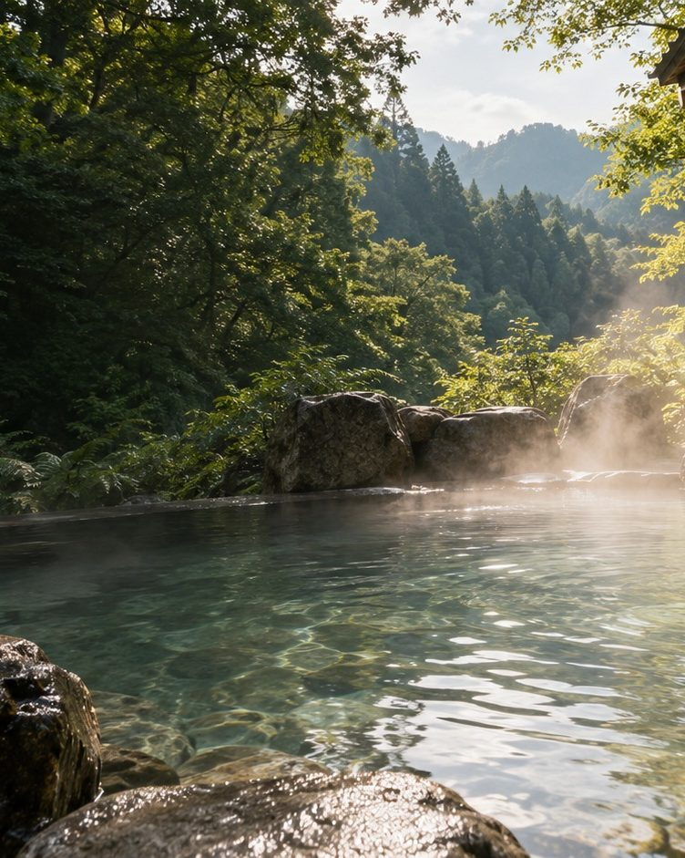
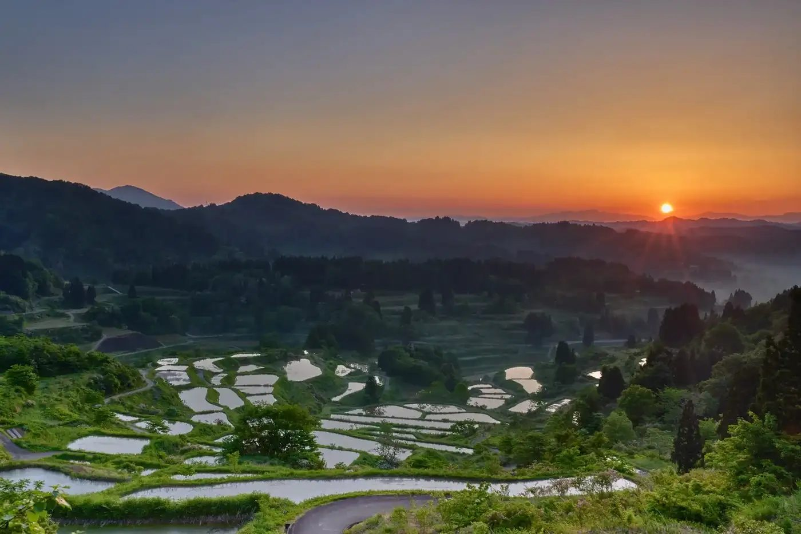

Furusato means hometown: the country place you belong to, wherever you live now. A hometown does not have to be where you were born. For one year you sponsor a rice terrace in Niigata and help keep it farmed. A farmer works it. You come to plant or harvest with them, and in February sake from the year's rice reaches you.
- Where
- Matsudai, in Tokamachi, Niigata Prefecture
- The terrace
- 150 m², numbered, with no rights over the land and no residency
- Who works it
- A local farmer, all year
- Japan's word for you
- Kankei jinko 関係人口: someone who lives elsewhere and keeps coming back
A steward's year follows the rice.
Five moments, from the ballot to the bottle on your table. You only need to be in Japan for one of them.

JanuaryThe ballot
Stewards are matched by ballot to a host farmer. In 2027, the first year, the ballot opens in April. The snow on the terraces becomes the water for the rice.

JunePlanting
If you are in Japan, you plant the terrace by hand with the farmer who looks after it.

July to SeptemberPhotographs
The farmer sends a photograph of the terraces each month. Fireflies come out over the paddies.

OctoberHarvest
Or come in the autumn, cut the rice by hand and hang it to dry on wooden racks.

FebruaryYour bottle
All the stewards' rice is brewed in one batch. Each bottle carries the terrace number and the harvest year.

Two thirds of Niigata's overseas visitors come for the snow. Almost none see what the snow is for.
After Tokyo, Kyoto and Osaka, a fourth stop.
A first trip to Japan from Europe or America lasts about two weeks. Fly in from Osaka, spend two nights, and take the train on to Tokyo for the flight home.
- 60 to 80 minfrom Osaka Itami to Niigata with ANA, six flights a day each way
- 66 to 79 minfrom Echigo-Yuzawa to Tokyo by Shinkansen, for the flight home
- 12.8 nightsis the average stay of a UK leisure visitor to Japan in 2025, against 7.1 for all visitors
Plan a Niigata visit.
Choose your season and two to four nights. Planting is in early summer and harvest in autumn.
June: planting
Plant the terrace by hand with the farmer. Two nights in Tokamachi.
- Flight from Osaka Itami to Niigata Book flight
- Host meets you at the station Included
- Onsen inn in Tokamachi, two nights Book inn
- Train on to Tokyo Book train
Booking opens once partners agree. Nothing here is on sale yet.

Two days around Tokamachi.
Day one
The terrace. A host meets the group at Echigo-Yuzawa station and drives to Matsudai. Lunch in the field, then planting or harvest with the farmer. The night is at Matsunoyama Onsen, a hot spring fed by seawater trapped about 12 million years ago.
Day two
The people. Lunch cooked by the farmers, then Matsunoi, a Tokamachi brewery that already brews with terrace rice, and the Matsudai art field, where sculptures of rice farmers stand on the terraces. A second night at the onsen.
Going on
The rest of Niigata. Kiyotsu Gorge and the Hakkaisan snow store are close by. The metalworkers of Tsubame-Sanjo are on the way to Niigata airport. Sado is for the next visit.
What a stewardship costs.
Two prices: one for the year, one for each visit. Flights and rail are separate.
A stewardship, for the year
One 150 m² terrace sponsored by two people and worked by a farmer, with a photograph each month from July to September and a labelled bottle each in February. A stewardship for one person is 45,000 yen.
A visit, per person
Two nights at an onsen inn with dinner and breakfast, an English-speaking host, the field day and transfers from Echigo-Yuzawa.
About three quarters of what two stewards pay for a stewardship and a visit goes to people in Niigata: the farmers, the inn, the brewery and the host.

50 places in 2027, drawn by ballot.
There are only so many terraces, and only so many guests a farming village can host well. So places are drawn once a year.
- Enter with a refundable 20 pound deposit. In 2027 the ballot opens in April. From 2028 it is in January.
- If you are drawn, pay the fee and show a booked flight to Japan. The fee goes to the host farmers.
- In 2027 the first visit is the October harvest. From 2028, choose planting in June or harvest in October.
- Renew the next year and keep the same terrace number. A stewardship gives no rights over land and no residency.